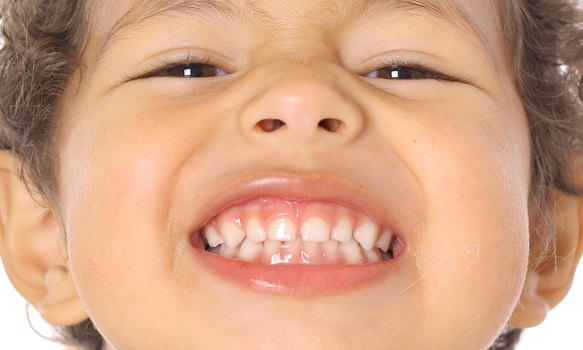

Odontologia Pediatra
La odontopediatría, rama de la odontología, se encarga principalmente del cuidado y tratamiento en dentaduras de niños, desde su nacimiento, donde los dientes todavía no han brotado, hasta la pre adolescencia, y esta especialidad trata de controlar y tratar las posibles lesiones y anomalías que surjan durante este tiempo. Lo que se pretende es dar un tratamiento diferente y más específico a nuestro pequeño paciente; ya que sus dientes son aún muy sensibles, por tratarse de dientes de leche y lo que queremos es preservar lo máximo posibles estos dientes naturales.
Los dentistas pediátricos están dedicados a la salud bucal de los niños desde el nacimiento hasta la adolescencia. Tienen la experiencia y la preparación para atender los dientes, encías y bocas de los niños durante las varias etapas de la infancia.
Los niños comienzan a formar sus dientes de leche durante los primeros 6 meses de vida. Hacia los 6 o 7 años de edad, comienzan a perder los dientes de leche, que serán sustituidos por los dientes permanentes.
Sin un cuidado dental adecuado, los niños se enfrentan a posibles caries y enfermedades bucales que pueden causarles dolor y complicaciones durante toda la vida. En la actualidad, las caries de la primera infancia (una enfermedad infecciosa) son 5 veces más comunes en los niños que el asma y 7 veces más comunes que la fiebre del heno.
Tipo de dientes de leche
- Incisivo Central
- Incisivo Lateral
- Caninos
- Primer Molar
- Segundo Molar
|
|
|
|---|---|
| Antes: | Después: |
 |
 |